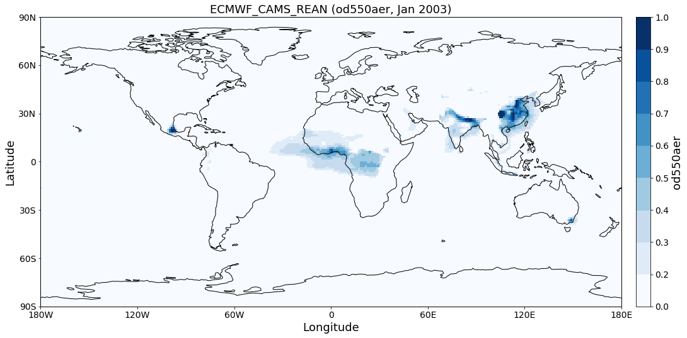
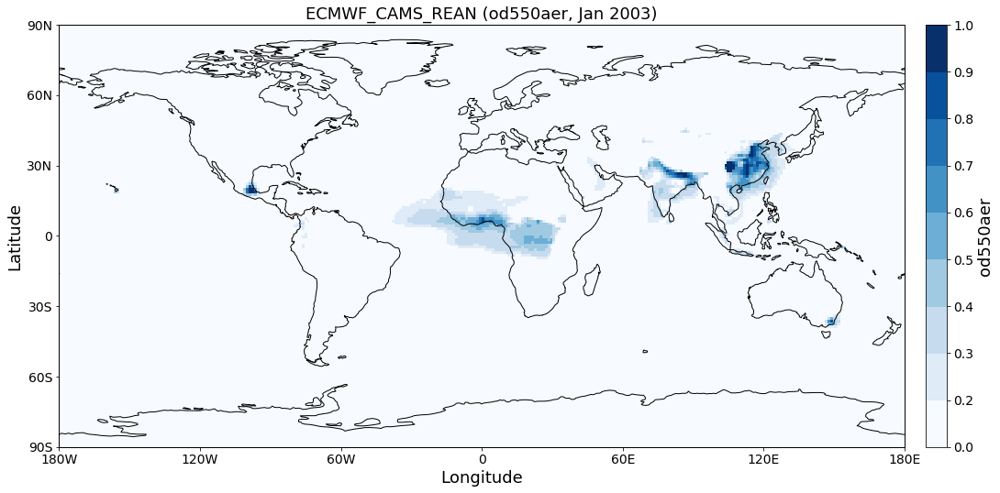

Setup for AeroCom users database (aerocom-users.met.no)¶
Getting access to the user-server¶
Please follow the instructions provided here. After you have tested your access as described in the link, the easiest way to set it up for pyaerocom is by mounting the remote user-server into a local directory of your choice.
Here, the AEROCOM user-server (that is, the directory */metno/aerocom-users-database/* on the *aerocom-users.met.no*) is mounted to the following location:
import os
HOME = os.path.expanduser('~') + '/'
DATA_DIR = HOME + 'aerocom-users-database/'
os.listdir(DATA_DIR)
['AEROCOM_EMISSIONS',
'AEROCOM-PHASE-II-IND2',
'EURODELTA',
'AEROCOM-PHASE-III',
'AEROCOM-PHASE-III-Trend',
'HTAP-PHASE-II',
'AEROCOM-PHASE-II',
'AEROCOM-PHASE-II-IND3',
'AEROCOM-PHASE-III-CTRL2018',
'SATELLITE-DATA',
'HTAP-PHASE-I',
'AEROCOM-PHASE-I',
'AMAP',
'ACCMIP',
'AEROCOM-PHASE-I-IND',
'AEROCOM-PHASE-II-PRESCRIBED-2013',
'BACCHUS',
'C3S-Aerosol',
'ECMWF',
'ECLIPSE',
'CCI-Aerosol']
If you have mounted correctly, this should output a list of data directories as found in the corresponding directory on the server.
NOTE¶
Currently, the user-server does not include any ungridded data (e.g. from Aeronet or EBAS networks).
Preparing pyaerocom¶
import pyaerocom as pya
pya.__version__ # NEEDS to be >= 0.7.0
Init data paths for lustre
0.007943153381347656 s
'0.7.0.dev3'
Note: The import of pyaerocom will not output Init data paths for lustre if you are not working at METNo (or if you do but you do not have lustre mounted at your root). This is because the METNo internal database structure for AEROCOM data will only be loaded and initiated if access to this database can actually be established.
Updating the base directory¶
Change the data base directory to the mounted subdirectory aerocom-users-database and it will automatically recognise the corresponding sub-directory structure for you.
pya.const.BASEDIR = DATA_DIR
Initiating directories for AEROCOM users database
You should see the output message
Initiating directories for AEROCOM users database when doing this.
If you do not, something may be wrong with you mount or you have an
outdated version of pyaerocom (you need at least version 0.7.0) for
this to work.
Now you are ready to go¶
You can start with searching the database for a model (or satellite) of you interest.
pya.browse_database('ECMWF*')
Found more than 20 matches for based on input string ECMWF*:
Matches: ['ECMWF_GEUH', 'ECMWF_GBST', 'ECMWF_EAC3_CLIM', 'ECMWF_EZUB', 'ECMWF_GZHY_96h', 'ECMWF_GKVV_96h', 'ECMWF_FI8E', 'ECMWF_FGKY', 'ECMWF_FBOVclim', 'ECMWF_FBOV_1x1', 'ECMWF_FWU0_96h', 'ECMWF_GTYL', 'ECMWF_GNHB_96h', 'ECMWF_G1UT', 'ECMWF_FLV2', 'ECMWF_CNTRL_96h', 'ECMWF_G1WY', 'ECMWF_G4E2test', 'ECMWF_0001_12Z', 'ECMWF_CAMS_REAN', 'ECMWF_GQK3', 'ECMWF_GU42', 'ECMWF_GN29', 'ECMWF_GSYG_96h', 'ECMWF_FZPR', 'ECMWF_FJ6U', 'ECMWF_GJJH_96h', 'ECMWF_FNYP_96h', 'ECMWF_0001_12Z_96h', 'ECMWF_F93I_96h', 'ECMWF_GKVV', 'ECMWF_FO4R', 'ECMWF_EYIM', 'ECMWF_G148', 'ECMWF_FSZD', 'ECMWF_GNAR', 'ECMWF_OSUITE_12Z', 'ECMWF_FTKI', 'ECMWF_OSUITE-NOSS', 'ECMWF_G4E2_96h', 'ECMWF_G4O2', 'ECMWF_GU42_96h', 'ECMWF_GZNU', 'ECMWF_ESUITE_0067_96h', 'ECMWF_EXLZ', 'ECMWF_GEUH_96h', 'ECMWF_GAEN', 'ECMWF_0001_96h', 'ECMWF_FBOV', 'ECMWF_FWU0', 'ECMWF_G2AA', 'ECMWF_GXB2', 'ECMWF_FNYP', 'ECMWF_GOKG', 'ECMWF_GWOE', 'ECMWF_FMNG', 'ECMWF_0001', 'ECMWF_GSTX', 'ECMWF_GXUV', 'ECMWF_EAC3', 'ECMWF_FA50', 'ECMWF_GQ7S', 'ECMWF_FH9Z', 'ECMWF_0067', 'ECMWF_CNTRL', 'ECMWF_GQ7U', 'ECMWF_F93I_48h', 'ECMWF_G1UX', 'ECMWF_GP1P', 'ECMWF_OSUITEtest', 'ECMWF_FWR5', 'ECMWF_G4E2', 'ECMWF_OSUITE', 'ECMWF_OSUITE_noFilter', 'ECMWF_GQM5', 'ECMWF_GSYG', 'ECMWF_FZPR_96h', 'ECMWF_FBOVtest', 'ECMWF_ESUITE_0067', 'ECMWF_G4O2_96h', 'ECMWF_MACC_REAN', 'ECMWF_0001_T511', 'ECMWF_0070', 'ECMWF_GYA6', 'ECMWF_F93I_72h', 'ECMWF_GLS8', 'ECMWF_G4E2test500', 'ECMWF_F026', 'ECMWF_REAN', 'ECMWF_GSTZ', 'ECMWF_FTKI_96h', 'ECMWF_GP1P_96h', 'ECMWF_FI91', 'ECMWF_GJJH', 'ECMWF', 'ECMWF_G9RR_96h', 'ECMWF_F93I', 'ECMWF_GMHE', 'ECMWF_OSUITE_96h', 'ECMWF_0067_96h', 'ECMWF_GNHB', 'ECMWF_OSUITE_12Z_96h', 'ECMWF_GZHY', 'ECMWF_G199', 'ECMWF_FG6N', 'ECMWF_G9RR', 'ECMWF-IFS-CY42R1-CAMS-RA-CTRL_AP3-CTRL2016-PD', 'ECMWF-IFS-CY43R1-CAMS-NITRATE-DEV_AP3-CTRL2016-PD', 'ECMWF_INSITU', 'ECMWF-IFS-CY42R1-CAMS-RA-CTRL_AP3-CTRL2016-PD', 'ECMWF-IFS-CY43R1-CAMS-NITRATE-DEV_AP3-CTRL2016-PD']
To receive more detailed information, please specify search ID more accurately
Reading of ECMWF IFS reanalysis data.
gridded_reader = pya.io.ReadGridded('ECMWF_CAMS_REAN')
print(gridded_reader)
Pyaerocom ReadGridded
---------------------
Model ID: ECMWF_CAMS_REAN
Data directory: /home/jonasg/aerocom-users-database//ECMWF/ECMWF_CAMS_REAN/renamed
Available variables: ['ang4487aer', 'od440aer', 'od550aer', 'od550bc', 'od550dust', 'od550oa', 'od550so4', 'od550ss', 'od865aer']
Available years: [2003, 2004, 2005, 2006, 2007, 2008, 2009, 2010, 2011, 2012, 2013, 2014, 2015, 2016, 2017, 9999]
Available time resolutions ['daily', 'monthly']
od550aer = gridded_reader.read_var(var_name='od550aer', ts_type='monthly')
print(od550aer)
pyaerocom.GriddedData: ECMWF_CAMS_REAN
Grid data: Aerosol optical depth at 550 nm / (1) (time: 60; latitude: 161; longitude: 320)
Dimension coordinates:
time x - -
latitude - x -
longitude - - x
Attributes:
Conventions: CF-1.6
NCO: "4.5.4"
history: Thu Nov 23 16:24:26 2017: ncrcat -O ECMWF_CAMS_REAN.daily.od550aer.2003.nc.01.nc...
nco_openmp_thread_number: 1
Cell methods:
mean: step
mean: time
/home/jonasg/anaconda3/lib/python3.6/site-packages/iris/fileformats/_pyke_rules/compiled_krb/fc_rules_cf_fc.py:2029: UserWarning: Gracefully filling 'lat' dimension coordinate masked points
warnings.warn(msg.format(str(cf_coord_var.cf_name)))
/home/jonasg/anaconda3/lib/python3.6/site-packages/iris/fileformats/_pyke_rules/compiled_krb/fc_rules_cf_fc.py:2029: UserWarning: Gracefully filling 'lon' dimension coordinate masked points
warnings.warn(msg.format(str(cf_coord_var.cf_name)))
/home/jonasg/anaconda3/lib/python3.6/site-packages/iris/fileformats/_pyke_rules/compiled_krb/fc_rules_cf_fc.py:2029: UserWarning: Gracefully filling 'lat' dimension coordinate masked points
warnings.warn(msg.format(str(cf_coord_var.cf_name)))
/home/jonasg/anaconda3/lib/python3.6/site-packages/iris/fileformats/_pyke_rules/compiled_krb/fc_rules_cf_fc.py:2029: UserWarning: Gracefully filling 'lon' dimension coordinate masked points
warnings.warn(msg.format(str(cf_coord_var.cf_name)))
/home/jonasg/anaconda3/lib/python3.6/site-packages/iris/fileformats/_pyke_rules/compiled_krb/fc_rules_cf_fc.py:2029: UserWarning: Gracefully filling 'lat' dimension coordinate masked points
warnings.warn(msg.format(str(cf_coord_var.cf_name)))
/home/jonasg/anaconda3/lib/python3.6/site-packages/iris/fileformats/_pyke_rules/compiled_krb/fc_rules_cf_fc.py:2029: UserWarning: Gracefully filling 'lon' dimension coordinate masked points
warnings.warn(msg.format(str(cf_coord_var.cf_name)))
/home/jonasg/anaconda3/lib/python3.6/site-packages/iris/fileformats/_pyke_rules/compiled_krb/fc_rules_cf_fc.py:2029: UserWarning: Gracefully filling 'lat' dimension coordinate masked points
warnings.warn(msg.format(str(cf_coord_var.cf_name)))
/home/jonasg/anaconda3/lib/python3.6/site-packages/iris/fileformats/_pyke_rules/compiled_krb/fc_rules_cf_fc.py:2029: UserWarning: Gracefully filling 'lon' dimension coordinate masked points
warnings.warn(msg.format(str(cf_coord_var.cf_name)))
/home/jonasg/anaconda3/lib/python3.6/site-packages/iris/fileformats/_pyke_rules/compiled_krb/fc_rules_cf_fc.py:2029: UserWarning: Gracefully filling 'lat' dimension coordinate masked points
warnings.warn(msg.format(str(cf_coord_var.cf_name)))
/home/jonasg/anaconda3/lib/python3.6/site-packages/iris/fileformats/_pyke_rules/compiled_krb/fc_rules_cf_fc.py:2029: UserWarning: Gracefully filling 'lon' dimension coordinate masked points
warnings.warn(msg.format(str(cf_coord_var.cf_name)))
od550aer.start, od550aer.stop, len(od550aer.time_stamps())
(numpy.datetime64('2003-01-01T00:00:00.000000'),
numpy.datetime64('2007-12-31T23:59:59.999999'),
60)

Interactive map plotting¶
from ipywidgets import interact, fixed
interact(od550aer.quickplot_map, time_idx=(0, 59), xlim=fixed((-180, 180)),
ylim=fixed((-90, 90)), vmin=(0, 0.5), vmax=(0.5, 1.5), log_scale=fixed(True),
add_zero=True)
 

<function ipywidgets.widgets.interaction._InteractFactory.__call__.<locals>.<lambda>(*args, **kwargs)>